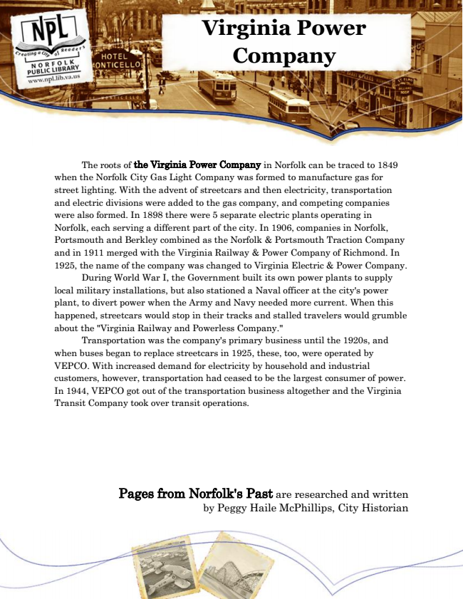

Virginia Power Company
The roots of the Virginia Power Company in Norfolk can be traced to 1849 when the Norfolk City Gas Light Company was formed to manufacture gas for street lighting. With the advent of streetcars and then electricity, transportation and electric divisions were added to the gas company, and competing companies were also formed. In 1898 there were 5 separate electric plants operating in Norfolk, each serving a different part of the city. In 1906, companies in Norfolk, Portsmouth and Berkley combined as the Norfolk & Portsmouth Traction Company and in 1911 merged with the Virginia Railway & Power Company of Richmond. In 1925, the name of the company was changed to Virginia Electric & Power Company.
During World War I, the Government built its own power plants to supply local military installations, but also stationed a Naval officer at the city's power plant, to divert power when the Army and Navy needed more current. When this happened, streetcars would stop in their tracks and stalled travelers would grumble about the "Virginia Railway and Powerless Company."
Transportation was the company's primary business until the 1920s, and when buses began to replace streetcars in 1925, these, too, were operated by VEPCO. With increased demand for electricity by household and industrial customers, however, transportation had ceased to be the largest consumer of power. In 1944, VEPCO got out of the transportation business altogether and the Virginia Transit Company took over transit operations.
Pages from Norfolk's Past are researched and written by Peggy Haile McPhillips, City Historian